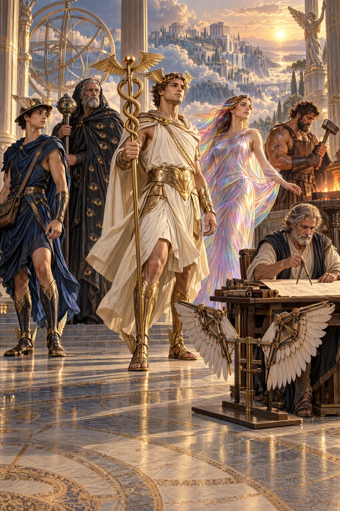
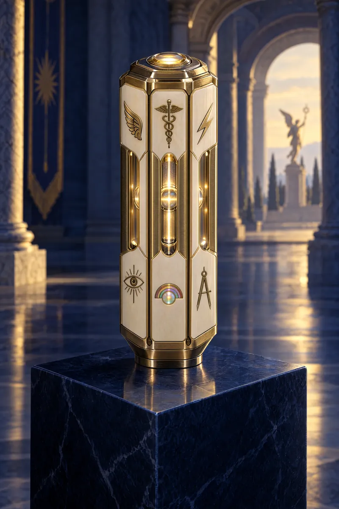
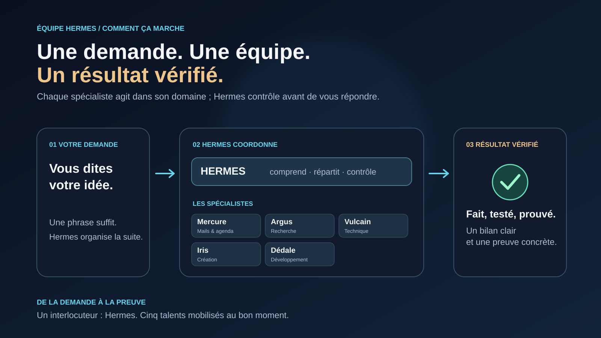

01 / COORDINATION
Hermes
Coordinateur · @hermesLe point d'entrée de l'équipe. Hermes comprend la demande, confie chaque partie au bon spécialiste et vérifie les résultats avant le bilan.
Hermes coordonne cinq assistants IA pour transformer votre demande en résultat concret. Confiez-lui votre mission en lui parlant dans l'application Hermes ou sur Telegram.
Hermes coordonne le travail. Chaque spécialiste intervient dans son domaine pour faire avancer la mission.
Le point d'entrée de l'équipe. Hermes comprend la demande, confie chaque partie au bon spécialiste et vérifie les résultats avant le bilan.
Courriels, agenda, Drive et suivi des informations utiles.
Recherche, comparaison et veille pour éclairer les choix.
Installation, réseau et dépannage du poste Windows.
Images, vidéos, identité visuelle et création graphique.
Sites, applications, scripts, API et projets GitHub.
Une vidéo de 10 secondes avec son et trois images, générées avec Seedance 2.5 (vidéo 1080p) et GPT Image 2.5 Sunburst (images).


Cliquez sur une image pour l'ouvrir en grand (4K). Images et vidéo générées par intelligence artificielle, le 1er octobre 2026.
Une demande mérite un résultat vérifiable. L'équipe découpe le travail, agit dans ses domaines et distingue ce qui est fait de ce qui reste à faire.
